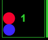

De handleiding voor snakes and ladders
Snakes and ladders is een bordspel met twee spelers. Hoe werkt het spel: Het spel bestaat uit een bord van 100 vakjes, jullie beginnen op vakje 1 en de eerste die op vakje 100 komt wint!!! Onderweg naar de 100 kom je snakes en ladders tegen, als je op het hoofd van een snake gaat staan word je teruggezet naar de staart van de slang. Maar er is nog wat anders en dat zijn de ladders, als je op een ladder staat ga je omhoog naar de andere ladder die er hetzelfde uitziet. Het is verder niet mogelijk om met een ladder lager op het bord te komen, het is ook niet mogelijk om vanaf de staart van een snake hoger op het bord te komen.

Hoe speel ik het spel: De spelers beslissen van tevoren wie speler een en wie speler twee is. Daarna drukken jullie om de beurt op de roll dice knop en zien jullie links op het scherm de nummers van de dobbelstenen en het totaal gegooid, eerst gaat speler 1 (rood) en daarna speler 2 (blauw). Zo gooien jullie door totdat een van jullie wint.
